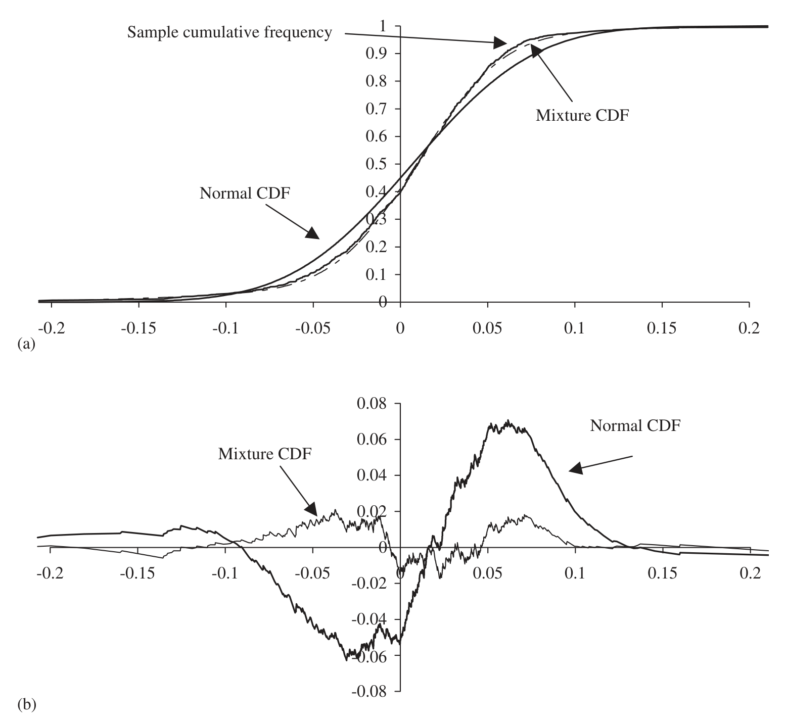
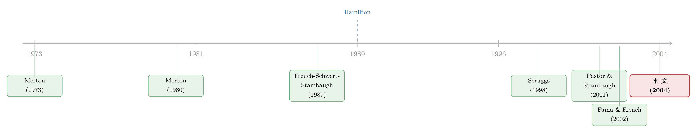

8.3% 里，有一半是替「将来会变天」付的保费
本文读的是 Mayfield (2004, JFE)：作者把市场波动率建成一个两状态的马尔可夫切换过程，从均衡里推出市场风险溢价，并发现——我们习惯用「历史超额收益的简单平均」估出来的那个 8.3%，大约有一半其实是补偿投资者「将来投资机会会突然变差」的风险；而由于 1940 年前后波动率过程发生了一次结构性断裂，这个简单平均很可能实质性地高估了大萧条以来的真实溢价。
1 一个我们天天用、却没几个人较真的数字
市场风险溢价（market risk premium）大概是金融里最重要的一个数字。资本成本、折现率、组合配置、几乎所有估值模型的输入，最后都要落到它身上。可越是重要的数字，越容易被一句话打发：把过去几十年股票相对无风险利率的超额收益，取个平均，完事。
Mayfield 在开篇就点出了这件事的尴尬：尽管已经有一大堆研究（Fama and French, 1988, 1989；Campbell, 1991 等等）告诉我们预期收益是随时间变化的，可实务里最常用的，依然是那个静态的「历史平均法」。Bruner et al. (1998) 调查了 27 家「广受推崇的公司」，发现它们估溢价的办法，无非就是历史超额收益的算术平均或几何平均。
问题来了。如果预期收益本身在动，那么把一段历史一锅端地平均，到底平均出了什么？
这正是这篇论文要较的真。它的核心主张，可以浓缩成一句话：历史超额收益里，混着两样东西——一样是补偿你「此刻」承担的波动，另一样是补偿你「将来投资机会可能突然变差」的风险。把这两样掰开，你会对那个 8.3% 有完全不同的理解。
（关于「预期收益随时间变化」这件事本身有多中心，可参见《贴现率：资产定价的中心议题》。）
2 被忽略的那件事：波动率会「换挡」
故事的起点是一个老观察：过去一个世纪，市场波动率变化极大。Schwert (1989a, b) 系统记录了这些起伏，并把它们和经济、金融市场的状况联系起来——大萧条年代的波动率高得离谱，而战后则平静得多。
接着，一个自然的问题是：既然 Merton (1980) 早就提出，预期收益应当和同期的方差正相关（风险越大，要求的补偿越多），那为什么实证里一直找不到这个正向关系？French, Schwert, and Stambaugh (1987)、Glosten, Jagannathan, and Runkle (1993) 反复尝试，结论却含糊甚至相反。
Scruggs (1998) 给了一条线索：找不到正向关系，可能是因为没有控制「投资机会的变化」。Lettau and Ludvigson (2001) 在消费 CAPM 上也讲了类似的话。换句话说，波动和收益之间那个「该有却没有」的关系，可能被一个遗漏的维度搅浑了——这个维度，就是波动率状态本身的切换。
于是 Mayfield 做了一个干净的设定：市场不是连续地变波动，而是在两种状态间「换挡」——一个低波动、典型的常态，一个高波动、反常的危机态。状态的演化服从马尔可夫过程。而风险溢价，就建成这个底层切换过程的函数。
直觉上，这和给利率期限结构装一个「会换挡的状态」是同一种思路（可参见《利率会换挡：当「换挡」本身也成了一种被定价的风险》）——一旦「换挡」这件事本身有风险，它就该被定价。
3 模型：把风险溢价拆成「州内」与「州际」
这是一篇有理论模型的论文，我们一步步把它讲透。
第一步，设定波动状态。 令 \(s_t \in (L, H)\) 表示 \(t\) 时刻经济所处的状态，瞬时方差只取两个值：
$$\sigma_t^2 = \begin{cases} \sigma_L^2, & \text{if } s_t = L,\\[4pt] \sigma_H^2, & \text{if } s_t = H,\end{cases}$$
其中 \(\sigma_L^2\) 是正常低波动态的方差，\(\sigma_H^2\) 是反常高波动态的方差。
第二步，设定切换概率。 因为方差过程是马尔可夫的，「下一刻波动率会变」的概率只取决于当前状态：
$$p_t = \begin{cases} p_L, & \text{if } s_t = L,\\[4pt] p_H, & \text{if } s_t = H.\end{cases}$$
这里有个关键的简化：作者假设投资者确知当前状态，但不确定状态何时切换。也就是说，不确定性不在「未来波动会变成多大」（只有两个值，没有悬念），而只在「何时切换」。这一点很要紧——它把问题从「猜大小」收窄成了「猜时点」。
第三步，推出均衡溢价。 作者在一个连续时间、代表性投资者、幂效用（power utility）的框架里求解（数学推导在附录），得到均衡风险溢价的表达式（论文 Eq. 3）。这是整篇文章的心脏，我们把它逐项标注出来：
读这个式子，要抓住「一加一」的结构：
- 第一项 \(\gamma\sigma_t^2\) 是 Mayfield 所谓的州内溢价 (intrastate risk premium)——它补偿你此刻正在承担的波动，是教科书 Merton (1980) 里那个「收益和同期方差正相关」的部分。
- 第二项 是州际溢价 (interstate risk premium)——它补偿「波动率水平会发生离散跳变」这件事。因为只有两个状态，跳变的幅度没有悬念，悬念只在跳变的时点。
作者明确指出，Eq. (3) 是 Merton (1973) 跨期资本资产定价模型（intertemporal CAPM, ICAPM）的一个特例——把「投资机会的变化」限定为「波动率水平的、不可预测的、状态依赖的跳变」这一种。
这正是 ICAPM 的精神：长期投资者怕的不只是市场本身的波动，还怕「投资环境变差」。给 CAPM 装上这第二颗心，是这一脉文献的共同母题（可参见《市场之外，长期投资者还在怕什么？——给 CAPM 装上第三颗「会怕波动」的心》）。
第四步，理解「市场预期收益」和「州内预期收益」的区别。 由于状态切换时财富会跳变，市场的预期收益并不等于「假设留在当前状态」的预期收益。论文 Eq. (10) 写得很干净：
$$E[R_t] = m_t + p_t J_t,$$
其中 \(m_t\) 是州内预期收益——即「假定经济不切换状态」时的预期收益。把它和 Eq. (3) 结合，就得到 Eq. (11)：
$$m_t - R_t^f = \gamma\sigma_t^2 - p_t J_t (1+K_t^*)^{-\gamma}.$$
这一步藏着全文最漂亮的一个洞见。在低波动态里，\(J_t<0\)（一旦切换到危机态，财富会缩水），所以投资者预期的市场收益低于州内收益——可由于危机迟迟没来，事后实现的收益反而高于预期。反过来，在高波动态里，投资者预期一旦回到常态财富会反弹，于是事后实现的收益低于预期。
这就是 Rietz (1988) 所说的比索问题 (peso problem) 的味道：那个被定价、却在样本里没怎么发生的「坏跳变」，让事后收益系统性地偏离了事前预期。Mayfield 的模型于是漂亮地调和了一个长期困扰实证的矛盾——为什么高波动期收益反而更低（事后），却又和「预期收益应随波动上升」的理论（事前）并不冲突。
（这种「为罕见但可怕的跳变付保费」的逻辑，和把稀有灾难写进定价的那一脉是相通的，可参见《罕见，所以可怕：把「算不准的概率」写进期权的微笑里》。）
4 识别策略：一套三步走的「映射」
模型有了，怎么把它和数据接上？这里是这篇论文方法论上最聪明的地方：理论模型直接映射进一个标准的实证框架。
由于切换是马尔可夫的，模型参数恰好可以用 Hamilton (1989) 的马尔可夫切换模型来估。作者先把瞬时切换概率 \(p_t\) 折算成持有期（离散时间）等价的 \(p_t'\)（Eq. 12：\(p_t J_t = p_t' \ln(1+J_t)\)），得到可估计的核心方程 Eq. (13)：
$$m_t - R_t^f = \gamma\sigma_t^2 - p_t' \ln(1+J_t)(1+K_t^*)^{-\gamma}.$$
然后分三步：
- 第一步（时间序列）：用 Hamilton (1989) 马尔可夫切换模型，估出两个状态各自的收益矩 \(m_t, \sigma_t\) 以及切换概率 \(p_t'\)。每月收益被假设来自两个对数正态分布之一。
- 第二步（偏好参数）：用 Eq. (13) 配合 Eqs. (7)–(9)，反解出与上述矩相容的偏好参数 \(\gamma\)、\(J_t\)、\(K_t^*\)。这里有一个关键的「恰好识别 (exactly identified)」：因为只有 \(\gamma\) 和 \(J_L\) 两个自由参数，去匹配两个状态的均值 \(m_L\) 和 \(m_H\)，所以模型不多不少、恰好识别。
- 第三步（分解）：用 Eq. (3) 和估出的参数，算出每个状态里州内与州际两个分量。
值得一提的是，Eq. (9) 里还需要一个主观贴现率 \(r\)，作者直接取 Campbell and Cochrane (1999) 的 0.1165，并验证结果对它不敏感。由于模型非线性，Panel B、C 的标准误是基于 Panel A 参数做 500 次蒙特卡洛抽样模拟出来的。
5 数据
朴素而标准。CRSP 的月度市值加权收益（含股利，VWRETD），覆盖 NYSE、Amex、Nasdaq，样本期 1926–2000，共 900 个月度观测。超额收益用同期一个月期国库券收益率扣减。
整段样本的年化平均超额收益是 8.3%（p 值 0.0039），年化标准差 19.0%，单月最大 38.2%、最小 −29.0%。收益的偏度 −0.512、超额峰度 7.043，都高度显著——正如 Fama (1965) 早就指出的，波动率随时间变化，本身就会在收益里制造出超额峰度。这恰恰为「两状态」的设定埋下了伏笔。
6 主要结果：两个世界，与那一半看不见的保费
把模型放上去估，结果干脆利落：市场收益确实像是从两个截然不同的分布里抽出来的。
- 低波动 / 高收益态：约
88%的收益来自这里。年化标准差13.0%，年化平均超额收益12.4%（显著异于零）。 - 高波动 / 低收益态：约
12%的收益来自这里。年化标准差38.2%，年化平均超额收益−17.9%（不显著异于零）。
两个状态都很「黏」：离开低波动态的概率 \(p_L' = 0.017\)，离开高波动态的概率 \(p_H' = 0.119\)，都显著小于 0.5。换算成预期停留时长，低波动态约 59.2 个月、高波动态约 8.4 个月——危机来得猛，但走得也快。
接着是偏好参数。相对风险厌恶系数 \(\gamma = 1.129\)，几乎就是对数效用（\(\gamma=1\)）的水平。这是个相当温和的数。耐人寻味的是：如此温和的风险厌恶，居然撑得起这么大的溢价——奥秘正在那第二项「州际」上。
再把溢价分解到两个状态（论文表 2 Panel C）：
- 低波动态的状态依赖溢价
5.2%（其中州内1.9%、州际3.3%）； - 高波动态的状态依赖溢价
32.5%。
请注意低波动态里这个对比：州际 3.3% 比州内 1.9% 还大。也就是说，即便在风平浪静的日子里，你拿到的超额收益里，超过一半补偿的不是「眼下的波动」，而是「将来可能变天」的风险。把整段样本无条件地加总，作者的结论是：约 50% 的无条件风险溢价，对应的是未来波动率水平变化的风险。
这是全文的第一个核心结论：那个 8.3%，有一半是替「将来会变天」付的保费。
7 反转：1940 年的那道裂缝
如果故事到此为止，它只是一个漂亮的分解。但真正关键的一步在于——这个切换过程，在历史上是稳定的吗？
Officer (1973)、Schwert (1989b) 早就指出，大萧条年代的市场波动反常地高；Pagan and Schwert (1990) 更进一步，证明那段时期的波动率和平稳的条件异方差模型根本对不上。顺着这条线，Mayfield 检验了马尔可夫转移概率本身是否发生过结构性断裂。
于是反转出现：他发现 1930 年代之后，底层波动过程有一次统计上显著的结构性漂移。具体而言——进入高波动态的可能性，从 1940 年前的约 39%，骤降到 1940 年后的不足 5%。
这件事对溢价的含义是巨大的。既然「掉进危机态」的概率大幅下降，那第二项州际溢价就该大幅缩水。算下来，市场风险溢价从 1940 年前的约 20.1%，降到 1940 年后的 7.1%。
可故事还没完。这里藏着一个 Elton (1999) 反复强调的陷阱：当投资者逐渐意识到「市场风险下降了」，股价会被一路抬高，于是事后实现的收益会高于事前预期。 Brown, Goetzmann, and Ross (1995) 也讲过相关的一点——能「事后幸存」的经济体，平均收益必然高于「事前所有经济体」的预期。换句话说，1940 年后的高实现收益里，有一部分只是「学习把风险重新定价」的一次性红利，并非可持续的事前溢价。
（这正是「幸存者偏差」的味道，可参见《美国只是侥幸活下来的那一个吗？》。）
当 Mayfield 对这一偏差做了修正后，他给出 1940 年后市场风险溢价的估计是 5.6%。
这就是全文真正的落点：正因为波动率过程在 1940 年前后断了一次，又正因为投资者随后「学习」抬高了股价，简单的历史平均很可能实质性地高估了大萧条以来的真实溢价。 你以为的 8.3%，事前的、可持续的那一部分，也许只有 5.6%。
下面这张图，是作者对模型拟合优度的一次直观检验：把样本收益的累积分布，和两状态模型隐含的分布、以及单一正态分布放在一起比。两状态模型对收益尾部（那些大涨大跌）的刻画，明显比正态分布贴得更紧——这正是「波动率会换挡」在数据里留下的指纹。

Figure 2: Sample cumulative frequency distribution versus cumulative distribution functions (CDFs) for
8 文献脉络
把这条线索拉直来看，它的来路相当清晰。
源头是 Merton 的两块基石：Merton (1969) 解出了无限期生命周期下的最优消费—财富比，Merton (1973) 给出了 ICAPM——预期收益不仅补偿市场风险，还补偿投资机会的变化。Merton (1980) 则把这套理论落到「如何估市场预期收益」的实证问题上。
接着，French, Schwert, and Stambaugh (1987) 这一脉去找「收益—波动」的正向关系，却屡屡碰壁；Scruggs (1998) 指出症结在于没控制投资机会的变化。与此同时，Hamilton (1989) 的马尔可夫切换模型，给「两状态」的实证刻画提供了趁手的工具，Turner, Startz, and Nelson (1989)、Pagan and Schwert (1990) 等纷纷用它来描述股市收益的时间序列性质。

另一条平行的线索是「结构性断裂」：Siegel (1992) 发现 20 世纪中叶的超额收益异常地大，Pastor and Stambaugh (2001) 用贝叶斯方法检验溢价的结构断点，Fama and French (2002) 则用 Gordon 增长模型的事前溢价去对照历史平均的事后溢价。Mayfield (2004) 站在这两条线索的交汇处：它用一个结构化的均衡模型，把「波动率换挡」和「溢价结构断裂」这两件事统一在同一个框架里，并据此给出一个事前可持续的溢价估计。
（关于溢价是否、以及如何「断掉」，这场争论至今未息，可参见《风险溢价，是「消失」了，还是「断」掉了？》。）
9 评论与延伸（Q&A + 研究方向）
(a) 几个可能的疑问
Q：州内溢价和州际溢价，到底有什么本质区别？
州内溢价是 \(\gamma\sigma_t^2\)——补偿你「此刻」正在承受的波动，是 Merton (1980) 那个静态的风险—收益关系。州际溢价补偿的是「波动率水平会离散跳变」这件事本身：只有两个状态，跳变幅度没有悬念，悬念只在何时跳。前者是「现在的怕」，后者是「将来会变天的怕」。本文的卖点正是后者贡献了约一半。
Q：风险厌恶系数只有 1.129，这么低，怎么撑得起这么大的溢价？
这恰恰是模型的精妙之处。在标准的消费 CAPM 里，要靠极高的 \(\gamma\) 才能解释股权溢价（即所谓股权溢价之谜）。而这里，溢价的一大块来自「州际」——一个对小概率、大幅度财富跳变的补偿。这种结构和比索问题、稀有灾难定价是一类思路：你不需要很高的风险厌恶，只需要一个虽不常发生、却足够可怕的坏状态。
Q：「恰好识别」是优点还是隐患？
两面都有。优点是模型不带过度拟合的自由度——两个参数 \(\gamma\)、\(J_L\) 去匹配两个均值，没有冗余。隐患是它无法被过度识别检验所证伪：模型一定能完美匹配那两个矩，所以「拟合得好」本身不构成对模型的支持。真正的检验落在分布形状（图 2）和结构断裂检验上，而非矩匹配。
Q：把整个市场的波动硬塞进「两个状态」，会不会太粗暴？
这是最实在的质疑。现实的波动率是连续变化的（GARCH 那一脉就这么建模）。两状态是一种刻意的简化，好处是「跳变幅度无悬念、只剩时点不确定」这个干净结构，让州际溢价有了清晰的解析表达。代价是，真实世界里若有三档、四档甚至连续的波动，本文可能低估了「投资机会变化」维度的丰富性。作者也承认，识别波动状态切换的实证方法，会把切换期的价格跳变当成高波动收益来处理。
Q：1940 年这个断点，是不是「挑」出来的？
作者用的是结构断裂检验（这一脉的工具如 Andrews, 1993），断点在 1930 年代之后被识别为显著，并和 Officer (1973)、Schwert (1989b)、Pagan and Schwert (1990) 关于大萧条波动异常的独立证据一致。但样本里只有一次大的高波动 episode（大萧条），所以「断点」在很大程度上是被那一段独特历史驱动的——这意味着事后的
5.6%估计，对「大萧条是不是一次性的」这个判断相当敏感。
Q：那么，实务里到底该用 8.3% 还是 5.6%？
本文的立场很明确：如果你相信 1940 年的结构断裂是真的、且不会重演，那么用整段历史平均（约 8.3%）会高估事前溢价，
5.6%更接近「事前、可持续」的那一部分。但这恰恰把判断权交还给了你——你得先回答「未来掉进高波动态的概率，到底更像 39% 还是更像 5%」。
(b) 几个可能的研究问题与提案
1. 把「波动率换挡」搬到公司债 / 信用利差上。 - 【经济故事】信用利差里同样混着「当前违约风险」和「将来信用环境会变差」两块。如果把市场（或宏观）波动建成两状态马尔可夫过程，信用利差里那块「州际」溢价——补偿「将来掉进信用危机态」的风险——可能正是结构模型一直解释不了的「信用利差之谜」的一部分。 - 【可行性】中。数据上 TRACE + 评级 + 宏观波动状态都现成；识别上可沿用 Hamilton 切换框架。难点是信用市场自身的流动性溢价会和「州际」纠缠，需要额外的流动性控制。
2. 外资持有人是「州际风险」的放大器还是缓冲器？ - 【经济故事】当市场掉进高波动态，谁先跑？如果外资在危机态系统性地撤离，他们就把「州际」风险放大了；如果他们是逆向接盘者，则相反。把投资者类型拆进两状态模型，能给「外资是不是蝗虫」之类的争论一个定价层面的答案。 - 【可行性】中。需要分投资者类型的持仓 / 流向数据（如 13F、跨境资本流）。识别策略可用波动状态切换作为「准事件」，看不同持有人在切换前后的行为差异。
3. 用期权隐含分布直接「读」出两状态。 - 【经济故事】本文的两状态是从已实现收益里估出来的（事后）。但期权价格是事前的、前瞻的。能不能从隐含波动率曲面里，直接识别出市场对「掉进高波动态」的概率定价，并和本文的 \(p_L'\) 对照？若两者长期背离，就说明事后估计漏掉了事前的恐惧。 - 【可行性】高。期权数据（OptionMetrics）成熟，model-free 隐含分布的技术也现成。这条几乎可以马上做。
4. 跨国检验：1940 年的断裂是美国独有，还是普遍现象？ - 【经济故事】如果「波动率结构断裂 → 溢价下降」是各国普遍规律，那本文的结论就稳健；如果只有美国如此，那它可能正是「幸存者」故事的又一个侧面。 - 【可行性】中。需要长样本的跨国股市数据（如 Dimson-Marsh-Staunton 那类）。难点是各国样本期和数据质量参差，结构断点检验的功效会打折。
5. 把「学习」内生进价格路径。 - 【经济故事】本文对「学习抬高股价」的偏差做的是事后修正。更进一步，可以建一个投资者实时学习转移概率的模型，让 1940 年后的价格漂移内生地从「信念更新」中长出来，从而把那一次性红利和可持续溢价干净地分开。 - 【可行性】中到低。理论上可做（贝叶斯学习 + 状态切换），但要把它和真实价格路径量化对接，识别上很有挑战。
10 我的判断
这篇论文最让我欣赏的，是它的结构感。它没有满足于「历史平均不靠谱」这种泛泛之论，而是用一个 ICAPM 的特例，把「不靠谱」拆成了两件可量化的事：一半溢价来自「将来会变天」，以及 1940 年的一次结构断裂让事前溢价被系统性高估。把一个含糊的实务直觉，做成一个能算出 5.2%、32.5%、5.6% 这些具体数字的框架，这是真功夫。
但我对识别有两点不踏实。其一，整个「州际」故事的分量，高度依赖大萧条那唯一一段高波动 episode——样本里几乎只有这一次「真正进入高波动态」的经历，于是 \(p_H'\)、\(J_t\)、乃至 1940 年断点，本质上都是被这一段历史驱动的。换一段历史，结论的稳健性存疑。其二，「恰好识别」让模型无法被矩匹配证伪，真正的检验只剩分布形状和断点检验，证据强度因此有限。
后续我最想看到的，是把这套「波动率换挡 + 州际溢价」的逻辑，拿到前瞻的期权隐含分布上做一次独立验证——如果事前的期权市场，给「掉进高波动态」定的价和本文事后估计的 \(p_L'\) 系统性地对不上，那才是对这个框架最有力的考验。其次，是把它搬进信用市场，看看那块一直解释不了的信用利差，是不是也藏着一笔「州际保费」。
参考文献
- Brown, S.J., Goetzmann, W.N., Ross, S.A. (1995). Survival. The Journal of Finance 50, 853–872.
- Campbell, J.Y., Cochrane, J.H. (1999). By force of habit: a consumption-based explanation of aggregate stock market behavior. Journal of Political Economy 107, 205–251.
- Elton, E.J. (1999). Presidential address: expected return, realized return, and asset pricing tests. Journal of Finance 54, 1199–1220.
- Fama, E.F. (1965). The behavior of stock-market prices. Journal of Business 38, 34–105.
- Fama, E.F., French, K.R. (2002). The equity premium. Journal of Finance 57, 637–659.
- French, K.R., Schwert, G.W., Stambaugh, R.F. (1987). Expected stock returns and volatility. Journal of Financial Economics 19, 3–29.
- Hamilton, J.D. (1989). A new approach to the economic analysis of nonstationary time series models. Journal of Econometrics 70, 127–157.
- Lettau, M., Ludvigson, S. (2001). Resurrecting the (C)CAPM: a cross-sectional test when risk premia are time-varying. Journal of Political Economy 109, 1238–1287.
- Mayfield, E.S. (2004). Estimating the market risk premium. Journal of Financial Economics 73(3), 465–496.
- Merton, R.C. (1973). An intertemporal asset pricing model. Econometrica 41, 867–888.
- Merton, R.C. (1980). On estimating the expected return on the market: an exploratory investigation. Journal of Financial Economics 8, 323–361.
- Officer, R.R. (1973). The variability of the market factor of the New York Stock Exchange. Journal of Business 46, 434–453.
- Pagan, A.R., Schwert, G.W. (1990). Alternative models for conditional stock volatility. Journal of Econometrics 45, 267–290.
- Pastor, L., Stambaugh, R.F. (2001). The equity premium and structural breaks. Journal of Finance 56, 1207–1239.
- Rietz, T.A. (1988). The equity premium: a solution. Journal of Monetary Economics 22, 117–131.
- Schwert, G.W. (1989b). Why does stock market volatility change over time? Journal of Finance 44, 1115–1153.
- Scruggs, J.T. (1998). Resolving the puzzling intertemporal relation between the market risk premium and conditional market variance: a two-factor approach. Journal of Finance 53, 575–603.
- Siegel, J.J. (1992). The equity premium: stock and bond returns since 1802. Financial Analysts Journal 48, 28–38.
- Turner, C.M., Startz, R., Nelson, C.R. (1989). A Markov model of heteroskedasticity, risk, and learning in the stock market. Journal of Financial Economics 25, 3–22.